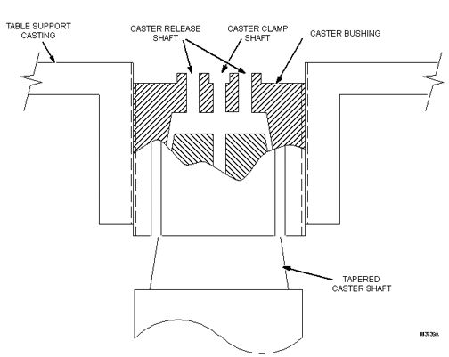
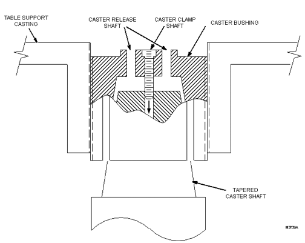

- 00000018WIA30B56E20GYZ
- id_131070723.0
- Aug 29, 2019 1:35:26 AM
Leveling Patient Transport
Prerequisites
| Required persons | Preliminary requirements | Procedure | Finalization |
|---|---|---|---|
| 1 | Not Applicable | 30 minutes | Not Applicable |
| Item | Quantity | Effectivity | Part number | Manufacturer |
|---|---|---|---|---|
| 4 mm Allen Wrench | 1 | - | - | - |
| Nonmagnetic Straight Edge/Level, 2 ft. long | 1 | - | - | - |
| 30 to 200 lb-in Ratchet-Type Torque Wrench with 3/8 in. Drive | 1 | - |
46-194427P255 | - |
| Hex Allen-Head Socket Driver with 5/32 in. Bit and 3/8 in. Drive | 1 | - |
46-307811P1 | - |
| ||||
About this task
This procedure is applicable to the following table products:
-
Signa Lightweight Patient Transport Table
-
Signa Oncology Patient Transport Table Option
-
Signa OR-Compatible Patient Transport Table Option
The Patient Transport is leveled to the magnet by adjusting the caster height. However, caster height must also be checked for uniform loading.
Adjusting Patient Transport for Floor Levelness
About this task
The first step in leveling Patient Transport is to adjust the casters to compensate for an uneven floor at the front of the magnet.
Procedure
Checking Caster Height Adjustment
Procedure
- At each of the four caster wheel assemblies, measure the height
from the floor to the top of the aluminum support casting (shown in
illustration below as “A”).
-
Record this measurement in Table 4 in the Measurement A, 1st Height column.
-
This height should be 11.0 in., ±0.250 in. (279.4 mm, ±6.4 mm). If not within tolerance, calculate the out-of-tolerance amount (- if caster height is too small; + if height is too large), and record this value in the Measurement A, 1st Delta column.
Figure 2. Caster Measurements 
Table 4. Recorded Measurements Caster Measurement A Measurement B 1st 2nd Height Delta -/+ Height Delta -/+ Gap Delta -/+ 1 2 3 4 Note:Observe the following:
-
Tolerance for Measurement A: 11.0 in., ±0.250 in. (279.4 mm, ±6.4 mm)
-
Tolerance for Measurement B: <0.250 in. (<6.4 mm)
-
Caster Mounting Design
About this task
When the caster bushing can turn freely inside the aluminum support casting, the bushing provides a means of adjusting caster height.
-
The Caster Bushing is slotted and has a tapered hole to accept the Tapered Caster Shaft shown below.
Figure 3. Caster Bushing and Tapered Caster Shaft 
-
When a caster screw is inserted into the Caster Clamp Shaft and tightened securely, the screw allows the weight of the table to draw the shaft up into the Caster Bushing. This causes the bushing to spread tightly against the aluminum support casting threads, preventing the bushing from turning and changing the height adjustment. (See illustration below.)
Figure 4. Securing Screw in Caster Clamp Shaft 
Procedure
Problem Conditions, Causes and Solutions
About this task
There are two conditions that could cause the caster assembly to come loose and possibly fall off the Patient Transport.
Procedure
- Problem Conditions and Causes:
- The tapered caster shaft can become loose and back out of the caster bushing. This can be caused if a screw was left in the Caster Release Shaft, and the screw is pushing against the Tapered Caster shaft, preventing the shaft from seating securely into the bushing.
- The caster bushing can back out (partially or completely) from
its threaded hole in the support casting. If the tapered caster shaft
becomes loose (described in Step a), or the caster bushing was improperly
positioned during caster height adjustment, the bushing can back out
of the aluminum support casting.Note:
The correct bushing positioning is detailed in the next section, Patient Transport Leveling.
- Solutions:
- When it becomes necessary to force the Tapered Caster Shaft out of the caster bushing during an adjustment procedure, two screws will be used in the vacant caster release shafts. One of the caster clamp screws will come from the caster being adjusted, and one borrowed from another caster assembly. (See Figure 5.)
- Using a 50 lb-in torque on the caster clamp screw will result in sufficient tightness of the caster bushing inside the aluminum support casting to prevent the bushing from backing out when the caster assembly swivels.
Patient Transport Leveling
Procedure
Undock the Patient Transport and move it out of the Magnet Room.Warning 
- Be sure to lower the higher side casters by the same amount, as this will ensure the Patient Transport top will not be
shifted to one side of the bridge when docked, and the dock center
will align with the Patient Transport docking mechanism. (See illustration
below.)
Figure 7. Aligning Patient Transport Surface to Bridge